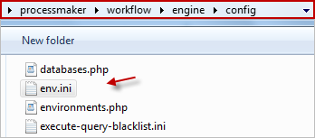
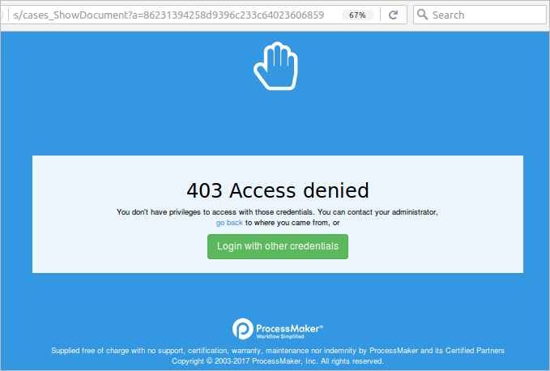
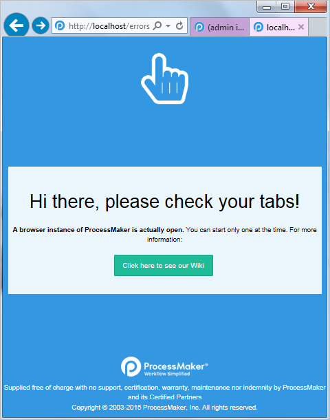

Overview
ProcessMaker uses the configuration file env.ini for global settings that aren't available in the Admin panel.
Editing the env.ini File
Use a plain text editor to edit the configuration file located at:
- <INSTALL-DIRECTORY>/workflow/engine/config/env.ini or:
- <INSTALL-DIRECTORY>/shared/sites/WORKSPACE/env.ini
- In Linux/UNIX (manual install):
- /opt/processmaker/workflow/engine/config/env.ini
- /opt/processmaker/shared/sites/WORKSPACE/env.ini
- In Linux/UNIX (Bitnami install):
Note: Bitnami is no longer used in ProcessMaker as of version 3.4.0. This must be considered when accessing some directories provided in this document.
- /opt/processmaker-3.X.X.b1-0/apps/processmaker/htdocs/workflow/engine/config/env.ini
- /opt/processmaker-3.X.X.b1-0/apps/processmaker/htdocs/shared/sites/WORKSPACE/env.ini
- In Windows (manual install):
- C:\opt\processmaker\workflow\engine\config\env.ini
- C:\opt\processmaker\shared\sites\WORKSPACE\env.ini
- C:\Bitnami\processmaker-3.X.X-1\apps\processmaker\htdocs\workflow\engine\config\env.ini
- C:\Bitnami\processmaker-3.X.X-1\apps\processmaker\htdocs\shared\sites\WORKSPACE\env.ini

The settings in the engine/config/env.ini file are used by all workspaces, whereas the settings in the sites/WORKSPACE/env.ini file only apply to a particular workspace. Settings can added to either file, but a setting in the sites/WORKSPACE/env.ini file will override a setting in the engine/config/env.ini file.
The default content in the env.ini file is the following:
Most of the settings can be enabled by setting them to 1 and disabled by setting them to 0. Settings that are strings should be enclosed in double quotation marks. Lines beginning with ";" (semicolons) are treated as comments and are ignored. Remove the semicolon to uncomment the setting.
Available Settings
code_scanner_enable =0|1
Available Version: ProcessMaker 3.3.17 and later.
Set to1to activate the Plugin/Trigger Code Security Scanner feature.
This is an alias ofenable_blacklist.code_scanner_scope = "import_plugin, enable_plugin, import_process, trigger"
Available Version: ProcessMaker 3.3.17 and later.
The parameter "code_scanner_scope" can be added to ProcessMakerenv.inifile to define the scope of Code Scanner, the parameter accepts one or multiple values separated by commas and enclosed in double quotes, a default behavior will apply to all the elements if this parameter is not present in env.ini or if there is not any valid argument. For more information, see the Plugin/Trigger Code Security Scanner page.debug_sql =0|1
Set to1to log all SQL queries to the wf_<WORKSPACE> database in MySQL and view SQL error messages in the__ERROR__system variable in the Debugger. Default is0. For more information, see the MySQL Logging section.debug_calendar =0|1
Set to1to log information about calendars. Default is0.default_lang = "LANG"
Example:default_lang = "es"
Sets the default language of ProcessMaker at the login screen. When the web browser is directed tohttp://IP-ADDRESS, it will automatically be redirected tohttp://IP-ADDRESS/sysworkflow/LANG/SKIN/login/login. If not set, then the default language is"en"(English).Note: This setting is the same configured in the Preferences configuration of the ProcessMaker interface.
default_skin = "SKIN"
Sets the default skin of ProcessMaker at the login screen. When the web browser is directed tohttp://IP-ADDRESS, it will automatically be redirected tohttp://IP-ADDRESS/sysworkflow/LANG/SKIN/login/login. If not set, then the default skin is"neoclassic".Note: This setting is the same configured in the Preferences configuration of the ProcessMaker interface.
disable_advanced_search_case_title_fulltext = 0|1
Available Version: As of ProcessMaker 3.4.11.
Set to1to disable full-text search techniques in the Case Title of the Advanced Search. By default, this value is0.Note: It is not recommended for full load environments because this setting affects performance.
disable_download_documents_session_validation =0|1
Set to1to enable the download of input or output documents without restrictions. This means that is not necessary to have a valid session or the right user permissions to download the document. If set to0, the user must have a valid session and the correct user permissions to download the input or output document. If not set, then the default value is0. For more information, read the Input Documents Download Restriction section.disable_php_upload_execution =0|1
Set to1to disable the upload and execution of PHP files. By default, the value is set to0. This flag can be set for the whole ProcessMaker installation or individually for each workspace. If the flag is active and a user tries to upload a PHP file, an alert message with "phpUpload" type will be recorded in the ProcessMaker Standard Log. This restriction includes: inputs documents, public files, documents, BPMN and classic dynaforms and files uploaded through the file and multiple file uploader control.enable_blacklist =0|1
Set to1to activate the Plugin/Trigger Code Security Scanner feature.Available Version: ProcessMaker 3.3.17 and later allows you to set which blacklisted activities to monitor. See Configure the Env.ini file for the Plugin/Trigger Code Security Scanner.
files_white_list = "extension1,extension2,..."
Available Version: ProcessMaker 3.3.1 and later.
This setting validates the file extension types that are allowed to be uploaded to ProcessMaker without MIME type validation. To do so, add the file extension white list separated by commas to the files_white_list parameter.
Example:files_white_list = "jpg,jpeg,png,tiff"
google_map_api_key = "API-KEY"
Available Version: ProcessMaker 3.3.0 and later.
Set the Google Maps API key after generating a key using the following page: Get API key. This is necessary to use the Geomap control. For more information go here.google_map_signature = "SIGNATURE"
Available Version: ProcessMaker 3.3.0 and later.
Set the signature for the Google Maps API to work properly with the Geomap control. For more information, see Google API key.load_headers_ie =0|1
Set to1to disable the 2.X compatibility mode. If not set to0, code and headers that are used only in 2.X processes will be set to maintain 2.X compatibility mode.logging_level = "level"
Available Version: ProcessMaker 3.3.0 and later.
Set the download level of ProcessMaker Standard logs. For more information, see Turn Standard Logs On or Off.logs_location = "<Location-Directory>"
Available Version: ProcessMaker 3.3.0 and later.
Set the path to store Log Files. The default path is:logs_location = "<INSTALL-DIRECTORY>/processmaker/shared/sites/<WORKSPACE>/logs/" logs_max_files = XX
Available Version: ProcessMaker 3.3.0 and later.
Set the number of days before the last entry in the Standard logs is deleted.memory_limit = "XM"
Example:Warning: As of ProcessMaker 3.5.0, the memory_limitsetting is removed. Edit the php.ini file instead.memory_limit = "512M"
Set the maximum amount of memory available for each login session in ProcessMaker. Use"M"for megabytes,"K"for kilobytes and"G"for gigabytes. It is not recommended to set this value to less than"100M", which is the default. If generating large Output Documents, it may be necessary to increase this value.mobileNotifications = true|false
Set to false to deactivate notifications in ProcessMaker Mobile.
mobileNotifications = false By default, mobile notifications are enabled. If this setting is not found in the env.ini file, the default value istrue.redirect_to_mobile =0|1
Set to1to open the direct case link directly in the ProcessMaKer Mobile app. Set to0, to open the link in the device's browser. The default is0.session_block =0|1
Set to1to block the use of multiple browser instances of ProcessMaker. The default is0. For more details, go to blocking multiple browser instances.smtp_timeout = XX
Available Version: ProcessMaker 3.3.0 and later.
For PHPMailer, set the the SMTP mail time out in seconds. If this value is not set in the env.ini file, then the default value is 20. If set to a non-numeric value, then it will be ignored and the default value will be used.system_utc_time_zone =0|1
Set to1to enable the multi time zone. Default is0. When the parameter is set to1, all dates in the database are stored as UTC0. When the parameter is set to0. All dates in the database are stored applying the server time zone.
For best practices regarding using this parameter, see Time Zone best practices.time_zone = "zone"
Set the time zone of the ProcessMaker server. This setting determines the time zone used for all timestamps in ProcessMaker, such as the starting and ending time for cases. By default, the time zone is set to"America/New_York". A list of available time zones can be found at: http://php.net/manual/en/timezones.phpupload_attempts_limit_per_user = 'XX.YY'
Available Version: ProcessMaker 3.3.1 and later.
Set the XX and YY integer numbers. Upload a file in any place of ProcessMaker that stand XX attempts every YY minutes per user.
The default value is sixty attempts every minute per user ('60,1'). If the number of attempts has been exceeded, the ProcessMaker server will return status 429 (Too many requests).wsdl_cache =0|1
Set to0to disable the caching of WSDL (Web Services Description Language) function calls. The default is1, so WSDL function calls are cached for up to 24 hours, which increases the reliability (especially if there are connection problems), but is a problem if immediate execution for debugging is necessary.
Input Document Download Restriction
If the disable_download_documents_session_validation flag is set to 1, then unauthorized users may download Input Documents. If the disable_download_documents_session_validation flag is set to 0 or is not included in the env.ini file, then only authorized users may download Input Documents. Therefore, if the user is not the one who uploaded the documents, he/she will need an Input Document process permission to download Input Documents.
This restriction affects:
- Input Document direct links.
- Input Documents set as steps in tasks.
- Documents uploaded using the Multiple File Uploader control.
- Documents uploaded using the File control.
Remember that this restriction is enabled by default. If the user is not allowed to download the file, a "403 Access denied" error message will be displayed:

If this setting is not enabled and the user doesn't have an open login session, then clicking on a link to download an Input or Output Document file will redirect to the ProcessMaker login screen. After login, the web browser will be redirected to the URL to download the file.
This setting is often enabled when needing to include links to files in emails and Output Documents or when accessing ProcessMaker files remotely via REST or web services. However, keep in mind that enabling this setting is a security hole, since it allows files to be downloaded using their file IDs and version numbers without verifying that the downloader is a valid ProcessMaker user and has permissions to access the file. If needing to guarantee that the files saved in ProcessMaker can only be accessed by authorized users, then do NOT enable this setting.
MySQL Logging
If the debug_sql option is set to 1 (or debug is set to 1), then every SQL query to the wf_<WORKSPACE> database (which is named wf_workflow by default) will be written in the following log file:
Each line in the log file records SQL actions in the following format:
For example, here is the shared/log/propel.log file for the admin user's login from the IP address 192.168.0.168:
04:55:05.1668|dani3018|192.168.0.90|546286|executeUpdate|0.00035500526428223|INSERT INTO BLACKLISTTRY (Name, DNI) VALUES (\'Daniela\', 167)]\";s:15:\"__VAR_CHANGED__\";N;}',`APP_DRIVE_FOLDER_UID` = '' WHERE APPLICATION.APP_UID='86281452856f37325e5c2a8033826603'|app.php:61:include()->sysGeneric.php:1022:require_once()->cases_Step.php:241:updateCase()->class.case.php:1046:update()->Application.php:448:save()->BaseApplication.php:1004:doSave()->BaseApplication.php:1041:doUpdate()->BaseApplicationPeer.php:480:doUpdate()->BasePeer.php:420:executeUpdate()->PreparedStatementCommon.php:356:executeUpdate()->|GET|/sysdani3018/en/neoclassic/cases/cases_Step?TYPE=DYNAFORM&UID=80263955456d8ab9949a783019937009&POSITION=1&ACTION=EDIT|TYPE=DYNAFORM UID=80263955456d8ab9949a783019937009 POSITION=1 ACTION=EDIT
05:13:32.4765|dani3018|192.168.0.90|604648|executeUpdate|0.00020098686218262|UPDATE PMT_BLACKLISTTRY SET Name = 'Dani123' where DNI = 167|app.php:61:include()->sysGeneric.php:1022:require_once()->cases_Step.php:196:executeTriggers()->class.case.php:3575:execute()->class.pmScript.php:349:executeAndCatchErrors()->class.pmScript.php:208:eval()->class.pmScript.php(208) : eval()'d code:2:executeQuery()->class.pmFunctions.php:317:executeUpdate()->|GET|/sysdani3018/en/neoclassic/cases/cases_Step?TYPE=DYNAFORM&UID=80263955456d8ab9949a783019937009&POSITION=1&ACTION=EDIT|TYPE=DYNAFORM UID=80263955456d8ab9949a783019937009 POSITION=1 ACTION=EDIT
Logging will noticeably slow down ProcessMaker's performance, so it is not suggested to use this option except for debugging. The log file is not automatically deleted, so it will continue to append new information until the file system runs out of space. If SQL logging is enabled for long periods of time, it is a good idea to periodically delete the log file so it doesn't occupy too much hard drive space.
Note that the processing time is in seconds and milliseconds, so a time of 1.309 means 1 second and 309 milliseconds.
Blocking Multiple Browser Instances
Set the setting session_block to 1 in the env.ini file to disallow the use of multiple browser instances of ProcessMaker. If this setting is not found in the env.ini file, the default value is 0.
This restriction affects the following tabs: Home, Designer, Dashboards, KPIs, Admin and any of the options inside them. Whenever trying to open multiple instances, the following warning page will display:

For the restriction to take effect, it is strongly recommended to log out of ProcessMaker and clear the cache of the browser.
Note: This restriction does not affect Dynaforms or Processes in the Designer tab that are automatically opened in other tabs in Internet Explorer 11 and later.
ltiple instances, the following warning page will display:
For the restriction to take effect, it is strongly recommended to log out of ProcessMaker and clear the cache of the browser.
Note: This restriction does not affect Dynaforms or Processes in the Designer tab that are automatically opened in other tabs in Internet Explorer 11 and later.